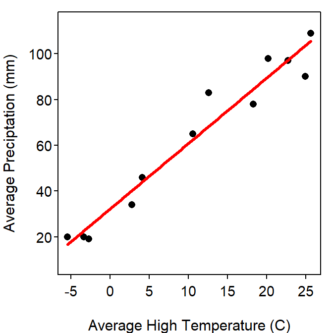

summary() because there are three p-values in that table. Be precise with your language!!
Yes, there is a signficant relationship between average precipitation and average high temperature for Ashland, WI (\(p<0.0005\); Table 1). Specifically, as the average high temperature increases by 1oC the mean average precipitation increases between 2.4 and 3.3 mm Table 2.
The y-intercept value suggests that the mean average monthly preciptation for all months with an average high temperature of 0oC is between 25.0 and 39.2 mm Table 2.
Mean average preciptation for all months with an average high of 10oC is between 55.7 and 65.8 mm.
The mean average preciptation for a month with an average high of 10oC is between 42.6 and 79.0 mm.
The prediction interval for the individual (question 4) is wider than the confidence interval for the mean (question 3) because there is more variability in predicting an individual as compared to a mean. Variability for predicting an individual includes both sampling and natural variability, whereas variability for the mean includes only sampling variability.
Table 1: Summary of the linear regression of proportion of average monthly preciptation on average high temperature for Ashland, WI.
Estimate Std. Error t value Pr(>|t|)
(Intercept) 32.0887 3.1782 10.10 1.46e-06
ahi 2.8676 0.2053 13.97 6.91e-08
---
Residual standard error: 7.842 on 10 degrees of freedom
Multiple R-squared: 0.9513, Adjusted R-squared: 0.9464
F-statistic: 195.2 on 1 and 10 DF, p-value: 6.913e-08 Table 2: Confidence intervals for coefficients of the linear regression of average monthly preciptation on average high temperature for Ashland, WI.
2.5 % 97.5 %
(Intercept) 25.007285 39.170170
ahi 2.410234 3.324969
Figure 1: Scatterplot of average monthly preciptation and average high temperature for Ashland, WI with the best-fit line.
R Appendix.
d2 <- read.csv("Ashland.csv")
lm2 <- lm(aprecip~ahi,data=d2)
summary(lm2)
confint(lm2)
predict(lm2,data.frame(ahi=10),interval="confidence")
predict(lm2,data.frame(ahi=10),interval="prediction")
fitPlot(lm2,xlab="Average High Temperature (C)",ylab="Average Preciptation (mm)")